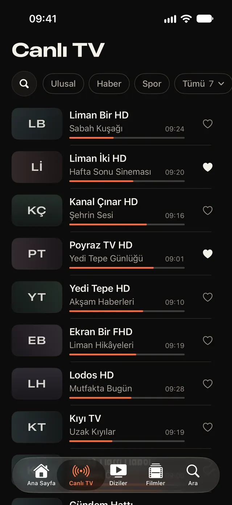
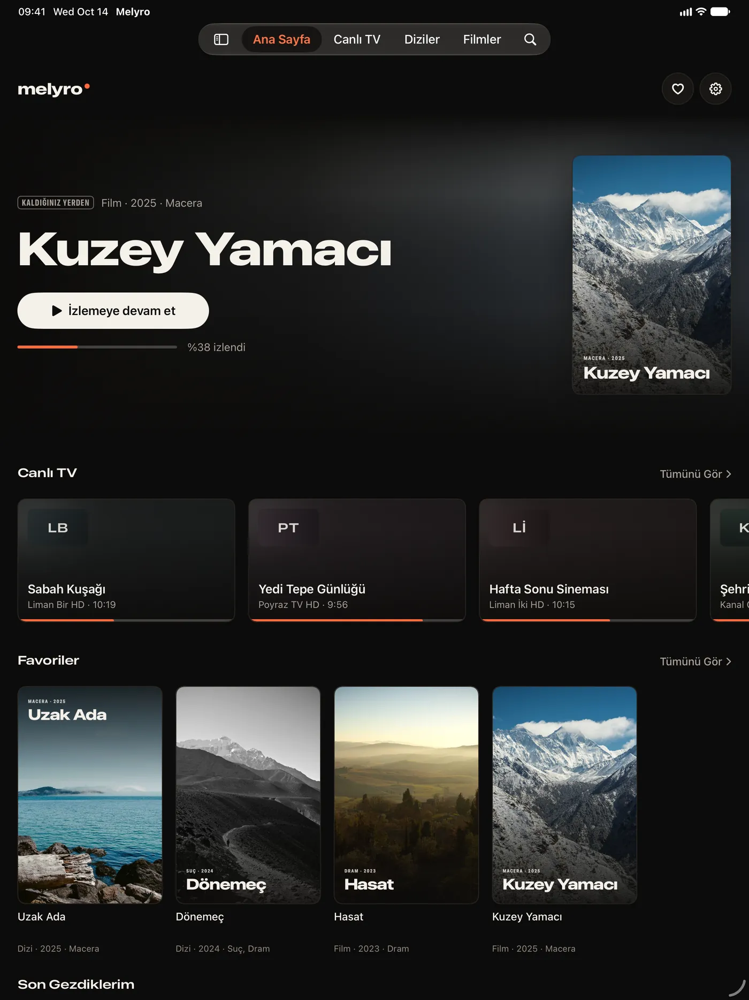
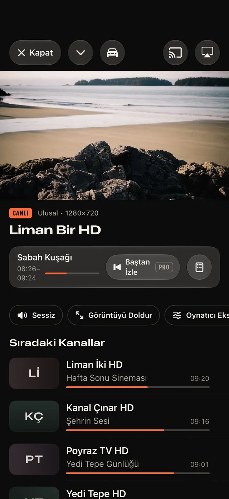
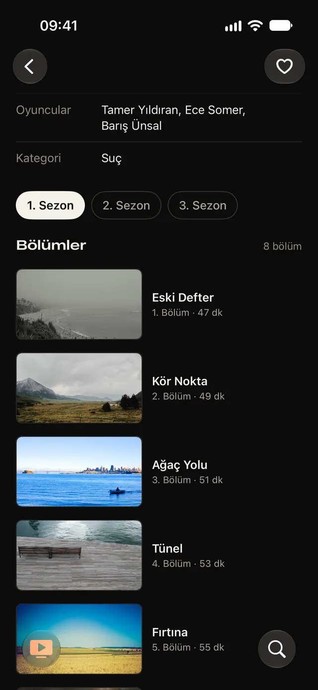
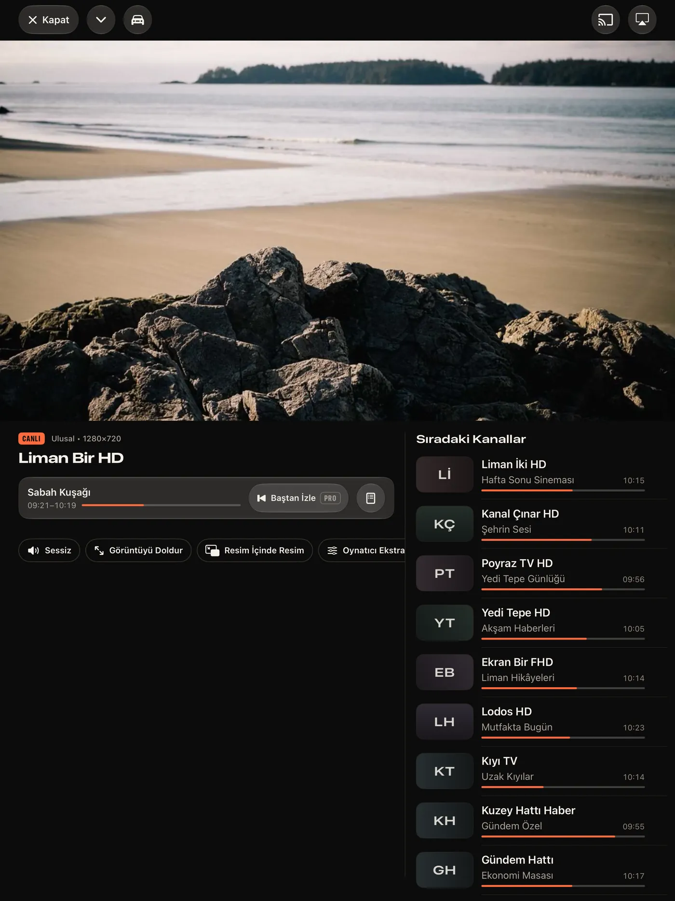
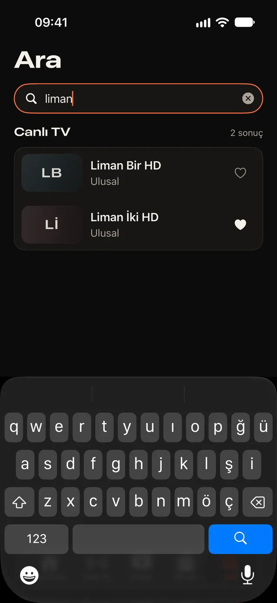
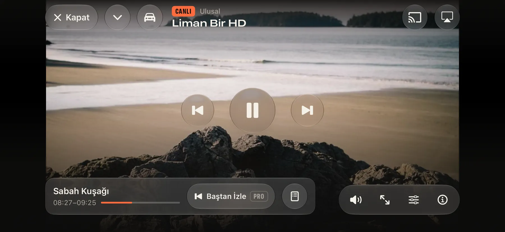
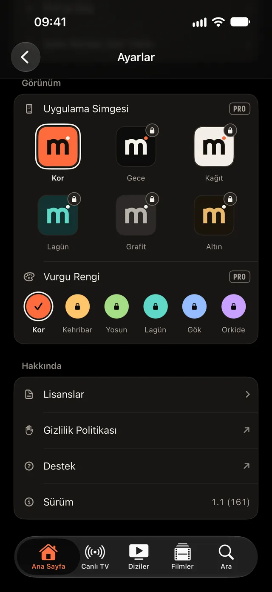

Şu an ne var, bir bakışta.
Her kanalda yayındaki program, bitiş saati ve ilerlemesi.

M3U listeniz, Xtream hesabınız ya da Jellyfin ve Emby sunucunuz. iPhone ve iPad'de koyu, hızlı ve reklamsız izleyin.


Dosyalar'dan bir dosya ya da bir adres. Yayın akışı listenizin belirttiği adresten gelir.
Sağlayıcınızın verdiği sunucu, kullanıcı adı ve parola. Parola iOS Anahtar Zinciri'nde kalır.
Kendi sunucunuzdaki filmler ve diziler, kaldığınız yerden.
Melyro içerik içermez. Uygulamada kanal, film, dizi ya da sağlayıcı dizini yoktur ve Melyro hiçbir sağlayıcıyla bağlantılı değildir. Yalnızca izleme hakkınız olan kaynakları ekleyin.
Her kanalda yayındaki program, bitiş saati ve ilerlemesi.

Sıradaki kanallar görüntünün hemen altında.
Bölüm biterken sıradakini önerir. İsterseniz kendiliğinden geçer.

iPad'de kanal listesi görüntünün yanında durur. iPhone Duo yarı açıkken görüntü bir yarıda, kontroller ve kanallar diğer yarıda.

AirPlay, Chromecast ve harici ekran. Resim içinde resim ve arka planda ses de var.
Kanal, film ve dizilerde arar. Türkçe harfleri yazmasanız da.

Dik tutarken kontroller ve kanallar görüntünün altında. Yan çevirince görüntü ekranı doldurur.

Kaynaklarınız, izleme geçmişiniz ve ayarlarınız cihazınızda kalır. Melyro kendi adına takip ya da analiz yapmaz.
Gizlilik politikasını okuyunİsteğe bağlı. Aylık, yıllık (7 gün ücretsiz deneme) ya da bir kez ömür boyu. Pro hiçbir içerik sağlamaz ya da açmaz.
Yayındaki programı baştan başlatın, sağlayıcınız destekliyorsa.
Program hatırlatıcıları ve kendi yayın akışı (XMLTV) adresiniz.
Favoriler, kaldığınız yer ve kaynaklar tüm cihazlarınızda.
Kaynaklar arasında tek dokunuşla geçin.
Uyku zamanlayıcı, oynatma hızı, hatırlanan ses ve altyazı.
Ana Sayfa düzeni, altı simge ve altı vurgu rengi.

Ücretsiz. iOS 18 ve sonrası, iPhone ve iPad.